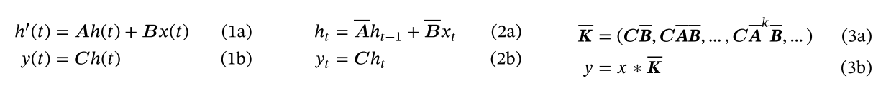
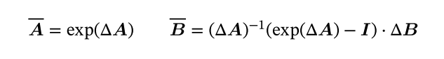
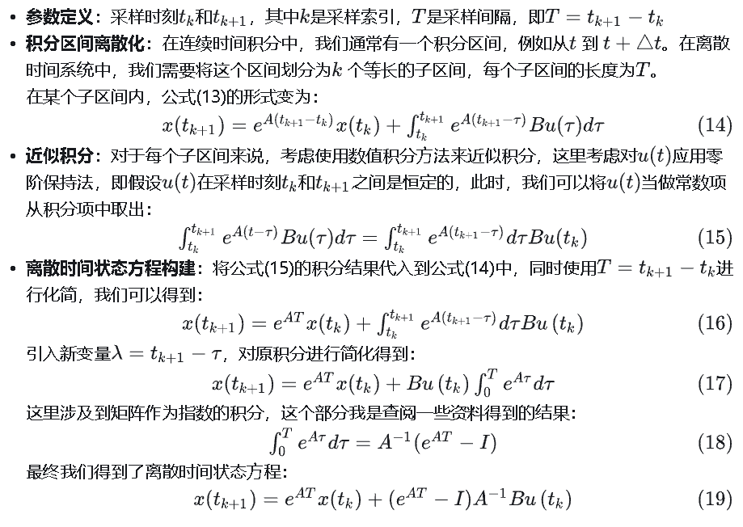
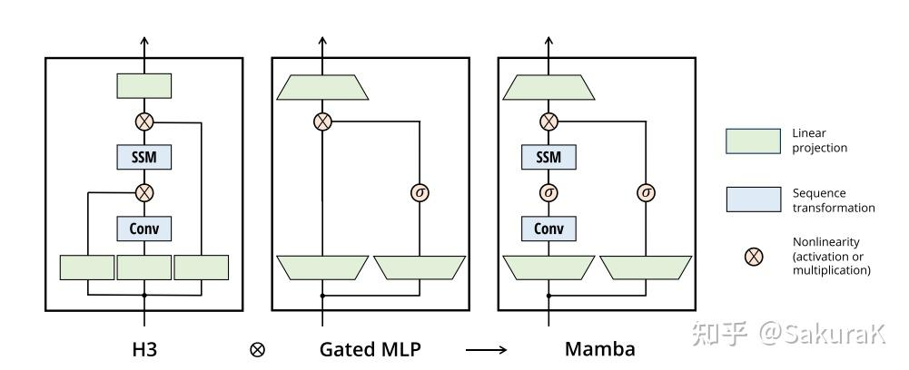
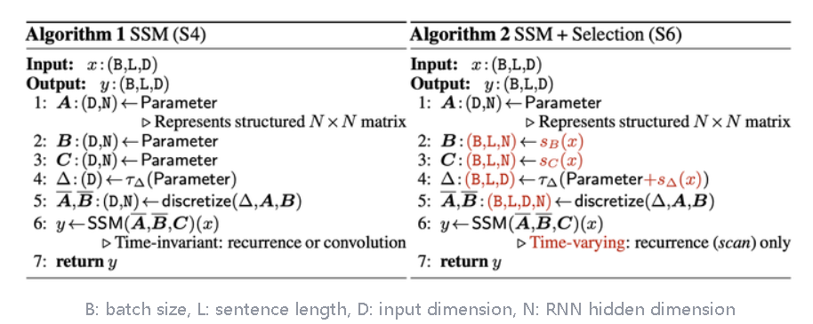
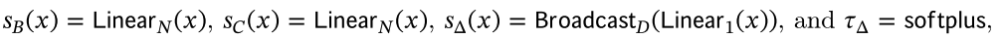
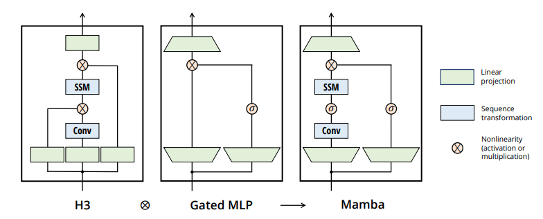
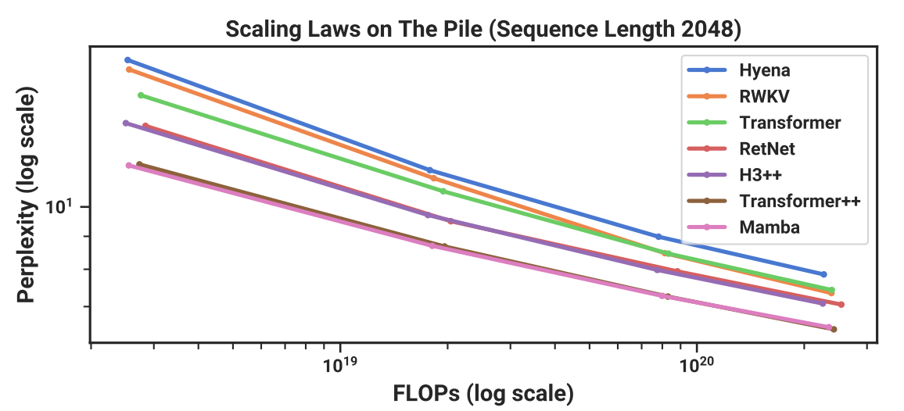
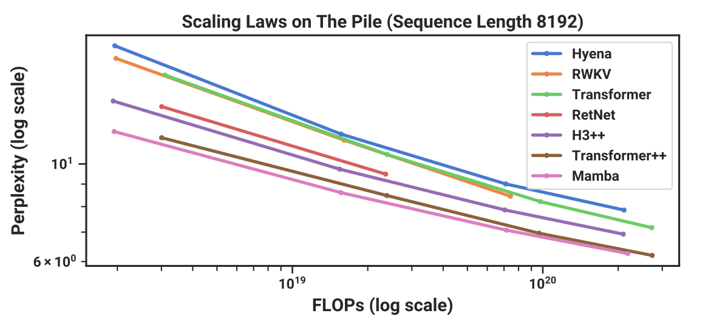

<!DOCTYPE html>


  <html lang="en">
    

    <head>
      <meta charset="utf-8" />
        
      <meta
        name="viewport"
        content="width=device-width, initial-scale=1, maximum-scale=1"
      />
      <title>Mamba---Linear-Time Sequence Modeling with Selective State Spaces |  小熊的小站</title>
  <meta name="generator" content="hexo-theme-ayer">
      
      <link rel="shortcut icon" href="/favicon.ico" />
       
<link rel="stylesheet" href="/dist/main.css">

      
<link rel="stylesheet" href="/css/fonts/remixicon.css">

      
<link rel="stylesheet" href="/css/custom.css">
 
      <script src="https://cdn.staticfile.org/pace/1.2.4/pace.min.js"></script>
       

<script type="text/javascript">
(function(i,s,o,g,r,a,m){i['GoogleAnalyticsObject']=r;i[r]=i[r]||function(){
(i[r].q=i[r].q||[]).push(arguments)},i[r].l=1*new Date();a=s.createElement(o),
m=s.getElementsByTagName(o)[0];a.async=1;a.src=g;m.parentNode.insertBefore(a,m)
})(window,document,'script','//www.google-analytics.com/analytics.js','ga');

ga('create', 'UA-228563528-1', 'auto');
ga('send', 'pageview');

</script>


 
<script>
var _hmt = _hmt || [];
(function() {
	var hm = document.createElement("script");
	hm.src = "https://hm.baidu.com/hm.js?71ee62302f36ca8f840077a641705255";
	var s = document.getElementsByTagName("script")[0]; 
	s.parentNode.insertBefore(hm, s);
})();
</script>


      <link
        rel="stylesheet"
        href="https://cdn.jsdelivr.net/npm/@sweetalert2/theme-bulma@5.0.1/bulma.min.css"
      />
      <script src="https://cdn.jsdelivr.net/npm/sweetalert2@11.0.19/dist/sweetalert2.min.js"></script>

      <!-- mermaid -->
      
      <style>
        .swal2-styled.swal2-confirm {
          font-size: 1.6rem;
        }
      </style>
    </head>
  </html>
</html>


<body>
  <div id="app">
    
      
    <main class="content on">
      <section class="outer">
  <article
  id="post-20240131"
  class="article article-type-post"
  itemscope
  itemprop="blogPost"
  data-scroll-reveal
>
  <div class="article-inner">
    
    <header class="article-header">
       
<h1 class="article-title sea-center" style="border-left:0" itemprop="name">
  Mamba---Linear-Time Sequence Modeling with Selective State Spaces
</h1>
 

      
    </header>
     
    <div class="article-meta">
      <a href="/2024/20240131/" class="article-date">
  <time datetime="2024-01-31T08:05:28.000Z" itemprop="datePublished">2024-01-31</time>
</a>   
<div class="word_count">
    <span class="post-time">
        <span class="post-meta-item-icon">
            <i class="ri-quill-pen-line"></i>
            <span class="post-meta-item-text"> Word count:</span>
            <span class="post-count">2.3k</span>
        </span>
    </span>

    <span class="post-time">
        &nbsp; | &nbsp;
        <span class="post-meta-item-icon">
            <i class="ri-book-open-line"></i>
            <span class="post-meta-item-text"> Reading time≈</span>
            <span class="post-count">8 min</span>
        </span>
    </span>
</div>
 
    </div>
      
    <div class="tocbot"></div>


  
    <div class="article-entry" itemprop="articleBody">
       
  <link rel="stylesheet" type="text&#x2F;css" href="https://cdn.jsdelivr.net/npm/hexo-tag-hint@0.3.1/dist/hexo-tag-hint.min.css"><p>论文两位作者Albert Gu和Tri Dao，博士都毕业于斯坦福大学，导师为Christopher Ré。</p>
<p>Albert Gu现在是CMU助理教授，多年来一直推动SSM架构发展。他曾在DeepMind 工作，目前是Cartesia AI的联合创始人及首席科学家。</p>
<p>Tri Dao，以FlashAttention、FlashDecoding系列工作闻名，现在是普林斯顿助理教授，和Together AI首席科学家，也在Cartesia AI担任顾问。</p>
<p>Code：<a href="https://link.zhihu.com/?target=https://github.com/state-spaces/mamba">github</a></p>
<hr>
<span id="more"></span>

<p>SSM指的是结构化状态空间序列模型（Structured state space sequence models，S4）</p>
<p>S4模型可由四个参数 $(\Delta,A,B,C)$ 定义，他们分两个阶段定义序列到序列的转换。</p>
<p></p>
<p>离散化有</p>
<p></p>
<hr>
<p>离散化证明：<br>$$<br>\dot{x}(t)=Ax(t)+Bu(t) \<br>y(t)=Cx(t)+Du(t)<br>$$</p>
<p>为了方便，我们对$e^{-At}x(t)$进行积分，我们得到：<br>$$<br>x(t)=e^{At}x(0)+\int_0^te^{A(t-\tau)}Bu(\tau)d\tau<br>$$<br>我们需要对上述进行离散化。</p>
<p></p>
<hr>
<p>在参数从 (∆,A,B,C) ↦ (A,B,C) 转化之后，模型可以通过两种方式计算，一种是线性递归 (式2) （使用RNN），另一种是全局卷积 (3) （使用CNN）。</p>
<p> 通常在训练时使用卷积模式 (式3) （提前看到整个输入序列），推理时使用递归模式 (式2) （每次看到一个时间步的输入）。</p>
<h3 id="线性时不变性（Linear-Time-Invariance，LTI）"><a href="#线性时不变性（Linear-Time-Invariance，LTI）" class="headerlink" title="线性时不变性（Linear Time Invariance，LTI）"></a>线性时不变性（Linear Time Invariance，LTI）</h3><p>  S4 的状态模型参数 (Δ,A,B,C)  在<strong>所有时间步</strong>中都是<strong>固定不变</strong>的，这一特性被称为线性时不变性。LTI 是递归和卷积的基石，为构建序列模型提供了一个简化但功能强大的框架。</p>
<p> 迄今为止，所有结构化 SSM 都是 LTI 模型，因为存在基本的效率限制。然而，本文工作的一个核心观点是，<strong>LTI 模型在对某些类型的数据进行建模时具有根本性的局限性</strong>，本文的技术贡献在于<strong>消除 LTI 限制，同时克服效率瓶颈</strong>。</p>
<h3 id="一些可以被认为是SSM的结构"><a href="#一些可以被认为是SSM的结构" class="headerlink" title="一些可以被认为是SSM的结构"></a>一些可以被认为是SSM的结构</h3><ul>
<li><p><strong>Linear attention</strong>: 线性注意力，它是自注意力的近似，涉及一个递归，可以看作是一个退化的线性 SSM。</p>
</li>
<li><p><strong>H3</strong>: 它在S4的基础上进行了扩展；可以被看作是一种由两个门控连接夹着一个 SSM 的架构（如下图）。H3还在主SSM层之前插入了一个标准的局部卷积，将这部分定义为一个shift-SSM。</p>
</li>
</ul>
<p></p>
<ul>
<li><p><strong>Hyena</strong>: 使用与 H3 相同的架构，但用 MLP 参数化全局卷积取代了 S4 层。</p>
</li>
<li><p><strong>RetNet</strong>: 在架构中增加了一个额外的门，并使用更简单的 SSM，允许另一种可并行计算的路径，使用多头注意力（MHA）的变体来代替卷积。</p>
</li>
<li><p><strong>RWKV</strong>: 是最近基于另一种线性注意近似（attention-free Transformer）设计的用于语言建模的 RNN。它的主要 “WKV “机制涉及 LTI 递归，可视为两个 SSM 的比值。</p>
</li>
</ul>
<p>其他的方法还有S5、QRNN、SRU等。</p>
<h3 id="S6的提出"><a href="#S6的提出" class="headerlink" title="S6的提出"></a>S6的提出</h3><p>S4是线性时间不变（LTI）模型，具有局限性。从递归模型的角度来看，它们恒定的动态（例如 $\bar{A},\bar{B}$ 不能使它们从上下文中选择正确的信息，或以输入依赖的方式影响沿序列传递的隐藏状态。从卷积模型的角度来看，虽然全局卷积可以解决标准复制任务，但在处理需要内容意识的选择性复制任务时则存在困难，因为输入到输出之间的间距是变化的，无法用静态卷积核建模。</p>
<p> 序列模型的效率与有效性之间的权衡由它们压缩状态的能力决定：高效的模型必须有一个小的状态，而有效的模型必须包含所有必要的上下文信息。作者提出，构建序列模型的一个基本原则是<strong>选择性</strong>，或者说具有上下文意识的能力，<strong>专注于或过滤掉输入到序列状态的信息</strong>。特别是，选择机制控制信息如何在序列维度上传播或相互作用。（Mamba就像是每次参考前面所有内容的一个概括，越往后写对前面内容概括得越狠，丢掉细节、保留大意）</p>
<p>于是有了以下改动：</p>
<p></p>
<p>其中</p>
<p></p>
<p>模型从时不变变成了<strong>时可变</strong>。</p>
<p>由于失去了LTI的性质，不能像之前的S4一样通过FFT来训练了。本文提出了<strong>IO-aware</strong>的parallel scan（一种memory bounded算子）算法来进行高效训练，<strong>降低整体的读写量</strong>从而提高wall-time efficiency。上面提到的outer product的参数化方式也对降低整体读写量很有帮助（大致思路是 (A¯,B¯)(\bar{A}, \bar{B})(\bar{A}, \bar{B}) 在SRAM里面on-the-fly算出来，避免<a target="_blank" rel="noopener" href="https://www.zhihu.com/search?q=materialization&search_source=Entity&hybrid_search_source=Entity&hybrid_search_extra=%7B%22sourceType%22:%22article%22,%22sourceId%22:%22661237120%22%7D">materialization</a>带来的读写开销）</p>
<h3 id="简化的-SSM-架构"><a href="#简化的-SSM-架构" class="headerlink" title="简化的 SSM 架构"></a>简化的 SSM 架构</h3><p></p>
<p>本文的简化区块设计结合了 H3 区块（大多数 SSM 架构的基础）和现代神经网络中无处不在的 MLP 区块。这只是简单地重复 Mamba 模块，而不是交错使用这两个模块。与 H3 模块相比，Mamba 用激活函数取代了第一个乘法门。与 MLP 模块相比，Mamba 在主分支上增加了一个 SSM。对于 $\sigma$ ，使用 SiLU / Swish 激活。</p>
<p>Mamba架构通过一个可控的扩展因子 E 来扩大模型维度 D。在每个块中，大部分参数（3ED^2）用于线性投影（2ED^2用于输入投影，ED^2用于输出投影）。与线性投影相比，SSM的参数（Δ, B, C 的投影和矩阵 A）数量要少得多。通过重复这个块，并与标准的归一化和残差连接交错，构成了Mamba架构。</p>
<p> 在实验中，扩展因子 E 总是固定为2，使用两层堆叠的块来匹配Transformer的交错多头注意力（Multi-Head Attention, MHA）和MLP块的 12D^2 参数。采用SiLU/Swish激活函数，使得Gated MLP成为流行的“SwiGLU”变体。最后，受到RetNet在类似位置使用归一化层的启发，还使用了一个可选的归一化层（选择了LayerNorm）。</p>
<h3 id="参数的影响"><a href="#参数的影响" class="headerlink" title="参数的影响"></a>参数的影响</h3><ol>
<li><strong>参数Δ的作用</strong>： 它<strong>控制着模型对当前输入 x_t 的关注程度，以及应该保留多少历史状态信息</strong>。调节 Δ 的大小，可以模拟不同的系统行为，从完全关注当前输入到完全保留历史状态，实现对输入的选择性关注。Δ 在SSMs中起着类似于RNN门控信号的作用，如在定理1中提到的 g_t，但在SSMs的框架下提供了一种更一般化的形式。 当 Δ 很大时，模型会重置状态 h，这相当于让模型更多地关注当前的输入 x，而非之前的状态。当 Δ 很小时，模型保持现有状态 h 的持久性，对当前的输入 x 给予较少的关注，从而忽略它。 SSMs 可以被看作是一个连续系统通过时间步长 Δ 离散化后的结果。在这个离散化的连续系统中，大的 Δ（趋向于无穷）意味着系统在较长时间内专注于当前输入，相当于“选择”了当前输入并忘记了当前状态。相反，小的 Δ（趋向于零）意味着当前输入是短暂的，可以被忽略。</li>
<li><strong>参数A的作用</strong>：  虽然理论上 A 也可以具备选择性，但 A 对模型的主要影响是通过它与 Δ 的相互作用来实现的（通过离散化公式 A=exp(ΔA) ）。作者认为，只要 Δ 具有选择性，就可以保证整个模型的选择性，而且 Δ 是提高模型性能的关键。为了保持模型的简洁性，作者选择不让 A 参数具备选择性。</li>
<li><strong>参数 B 和 C 的作用</strong>：  选择性最重要的特性是<strong>过滤掉无关信息</strong>，从而将序列模型的上下文<strong>压缩</strong>成有效的状态。在 SSM 中，修改 B 和 C 使其具有选择性，可以使模型能够更精细地控制输入和状态的流动。  </li>
</ol>
<ul>
<li>B 控制着输入 x_t 是否被引入到状态 h_t  中，即选择性地决定哪些输入对状态的更新至关重要。</li>
<li>C 影响着状态 h_t 如何转化为输出 y_t，即如何基于当前的状态信息生成最终的输出。</li>
</ul>
<p>这意味着，SSM可以基于当前处理的数据内容以及已经编码在隐藏状态中的上下文信息，来动态地调整其内部状态的更新方式和输出。这增加了模型处理序列数据时的灵活性和有效性，因为它可以根据数据的具体特征和任务需求来优化信息流。</p>
<h3 id="实验结果"><a href="#实验结果" class="headerlink" title="实验结果"></a>实验结果</h3><p></p>
<p></p>
<p>其中Transformer++指的是带有Rope和SwiGLU的版本（i.e., LLaMa用的）。</p>
<p>结果中也有国人研发的号称取代transformer的RWKV。</p>
<p>而这些模型只能匹敌普通的transformer，只有mamba才能与transformer++匹敌。</p>
 
      <!-- reward -->
      
    </div>
    

    <!-- copyright -->
    
    <footer class="article-footer">
       
<div class="share-btn">
      <span class="share-sns share-outer">
        <i class="ri-share-forward-line"></i>
        分享
      </span>
      <div class="share-wrap">
        <i class="arrow"></i>
        <div class="share-icons">
          
          <a class="weibo share-sns" href="javascript:;" data-type="weibo">
            <i class="ri-weibo-fill"></i>
          </a>
          <a class="weixin share-sns wxFab" href="javascript:;" data-type="weixin">
            <i class="ri-wechat-fill"></i>
          </a>
          <a class="qq share-sns" href="javascript:;" data-type="qq">
            <i class="ri-qq-fill"></i>
          </a>
          <a class="douban share-sns" href="javascript:;" data-type="douban">
            <i class="ri-douban-line"></i>
          </a>
          <!-- <a class="qzone share-sns" href="javascript:;" data-type="qzone">
            <i class="icon icon-qzone"></i>
          </a> -->
          
          <a class="facebook share-sns" href="javascript:;" data-type="facebook">
            <i class="ri-facebook-circle-fill"></i>
          </a>
          <a class="twitter share-sns" href="javascript:;" data-type="twitter">
            <i class="ri-twitter-fill"></i>
          </a>
          <a class="google share-sns" href="javascript:;" data-type="google">
            <i class="ri-google-fill"></i>
          </a>
        </div>
      </div>
</div>

<div class="wx-share-modal">
    <a class="modal-close" href="javascript:;"><i class="ri-close-circle-line"></i></a>
    <p>扫一扫，分享到微信</p>
    <div class="wx-qrcode">
      
    </div>
</div>

<div id="share-mask"></div>  
  <ul class="article-tag-list" itemprop="keywords"><li class="article-tag-list-item"><a class="article-tag-list-link" href="/tags/%E4%BA%BA%E5%B7%A5%E6%99%BA%E8%83%BD/" rel="tag">人工智能</a></li><li class="article-tag-list-item"><a class="article-tag-list-link" href="/tags/%E6%B7%B1%E5%BA%A6%E5%AD%A6%E4%B9%A0/" rel="tag">深度学习</a></li><li class="article-tag-list-item"><a class="article-tag-list-link" href="/tags/%E8%87%AA%E7%84%B6%E8%AF%AD%E8%A8%80%E5%A4%84%E7%90%86/" rel="tag">自然语言处理</a></li></ul>

    </footer>
  </div>

   
  <nav class="article-nav">
    
      <a href="/2024/20240206/" class="article-nav-link">
        <strong class="article-nav-caption">上一篇</strong>
        <div class="article-nav-title">
          
            周耀辉解析《春秋》
          
        </div>
      </a>
    
    
      <a href="/2024/20240116/" class="article-nav-link">
        <strong class="article-nav-caption">下一篇</strong>
        <div class="article-nav-title">On Embeddings for Numerical Features in Tabular Deep Learning</div>
      </a>
    
  </nav>

   
 
   
     
</article>

</section>
      <footer class="footer">
  <div class="outer">
    <ul>
      <li>
        Copyrights &copy;
        2019-2024
        <i class="ri-heart-fill heart_icon"></i> LJX
      </li>
    </ul>
    <ul>
      <li>
        
        
        
        Powered by <a href="https://hexo.io" target="_blank">Hexo</a>
        <span class="division">|</span>
        Theme - <a href="https://github.com/Shen-Yu/hexo-theme-ayer" target="_blank">Ayer</a>
        
      </li>
    </ul>
    <ul>
      <li>
        
        
        <span>
  <span><i class="ri-user-3-fill"></i>Visitors:<span id="busuanzi_value_site_uv"></span></span>
  <span class="division">|</span>
  <span><i class="ri-eye-fill"></i>Views:<span id="busuanzi_value_page_pv"></span></span>
</span>
        
      </li>
    </ul>
    <ul>
      
    </ul>
    <ul>
      
    </ul>
    <ul>
      <li>
        <!-- cnzz统计 -->
        
        <script type="text/javascript" src='https://s9.cnzz.com/z_stat.php?id=1278069914&amp;web_id=1278069914'></script>
        
      </li>
    </ul>
  </div>
</footer>    
    </main>
    <div class="float_btns">
      <div class="totop" id="totop">
  <i class="ri-arrow-up-line"></i>
</div>

<div class="todark" id="todark">
  <i class="ri-moon-line"></i>
</div>

    </div>
    <aside class="sidebar on">
      <button class="navbar-toggle"></button>
<nav class="navbar">
  
  <div class="logo">
    <a href="/"></a>
  </div>
  
  <ul class="nav nav-main">
    
    <li class="nav-item">
      <a class="nav-item-link" href="/">主页</a>
    </li>
    
    <li class="nav-item">
      <a class="nav-item-link" href="/archives">目录</a>
    </li>
    
    <li class="nav-item">
      <a class="nav-item-link" href="/about">关于本站</a>
    </li>
    
    <li class="nav-item">
      <a class="nav-item-link" href="/about_me">关于我</a>
    </li>
    
    <li class="nav-item">
      <a class="nav-item-link" href="/photos">人间烟火</a>
    </li>
    
    <li class="nav-item">
      <a class="nav-item-link" target="_blank" rel="noopener" href="https://act18l.github.io/">欧拉计划</a>
    </li>
    
  </ul>
</nav>
<nav class="navbar navbar-bottom">
  <ul class="nav">
    <li class="nav-item">
      
      <a class="nav-item-link nav-item-search"  title="Search">
        <i class="ri-search-line"></i>
      </a>
      
      
    </li>
  </ul>
</nav>
<div class="search-form-wrap">
  <div class="local-search local-search-plugin">
  <input type="search" id="local-search-input" class="local-search-input" placeholder="Search...">
  <div id="local-search-result" class="local-search-result"></div>
</div>
</div>
    </aside>
    <div id="mask"></div>

<!-- #reward -->
<div id="reward">
  <span class="close"><i class="ri-close-line"></i></span>
  <p class="reward-p"><i class="ri-cup-line"></i>请我喝杯咖啡吧~</p>
  <div class="reward-box">
    
    <div class="reward-item">
      
      <span class="reward-type">支付宝</span>
    </div>
    
    
    <div class="reward-item">
      
      <span class="reward-type">微信</span>
    </div>
    
  </div>
</div>
    
<script src="/js/jquery-3.6.0.min.js"></script>
 
<script src="/js/lazyload.min.js"></script>

<!-- Tocbot -->
 
<script src="/js/tocbot.min.js"></script>

<script>
  tocbot.init({
    tocSelector: ".tocbot",
    contentSelector: ".article-entry",
    headingSelector: "h1, h2, h3, h4, h5, h6",
    hasInnerContainers: true,
    scrollSmooth: true,
    scrollContainer: "main",
    positionFixedSelector: ".tocbot",
    positionFixedClass: "is-position-fixed",
    fixedSidebarOffset: "auto",
  });
</script>

<script src="https://cdn.staticfile.org/jquery-modal/0.9.2/jquery.modal.min.js"></script>
<link
  rel="stylesheet"
  href="https://cdn.staticfile.org/jquery-modal/0.9.2/jquery.modal.min.css"
/>
<script src="https://cdn.staticfile.org/justifiedGallery/3.8.1/js/jquery.justifiedGallery.min.js"></script>

<script src="/dist/main.js"></script>

<!-- ImageViewer -->
 <!-- Root element of PhotoSwipe. Must have class pswp. -->
<div class="pswp" tabindex="-1" role="dialog" aria-hidden="true">

    <!-- Background of PhotoSwipe. 
         It's a separate element as animating opacity is faster than rgba(). -->
    <div class="pswp__bg"></div>

    <!-- Slides wrapper with overflow:hidden. -->
    <div class="pswp__scroll-wrap">

        <!-- Container that holds slides. 
            PhotoSwipe keeps only 3 of them in the DOM to save memory.
            Don't modify these 3 pswp__item elements, data is added later on. -->
        <div class="pswp__container">
            <div class="pswp__item"></div>
            <div class="pswp__item"></div>
            <div class="pswp__item"></div>
        </div>

        <!-- Default (PhotoSwipeUI_Default) interface on top of sliding area. Can be changed. -->
        <div class="pswp__ui pswp__ui--hidden">

            <div class="pswp__top-bar">

                <!--  Controls are self-explanatory. Order can be changed. -->

                <div class="pswp__counter"></div>

                <button class="pswp__button pswp__button--close" title="Close (Esc)"></button>

                <button class="pswp__button pswp__button--share" style="display:none" title="Share"></button>

                <button class="pswp__button pswp__button--fs" title="Toggle fullscreen"></button>

                <button class="pswp__button pswp__button--zoom" title="Zoom in/out"></button>

                <!-- Preloader demo http://codepen.io/dimsemenov/pen/yyBWoR -->
                <!-- element will get class pswp__preloader--active when preloader is running -->
                <div class="pswp__preloader">
                    <div class="pswp__preloader__icn">
                        <div class="pswp__preloader__cut">
                            <div class="pswp__preloader__donut"></div>
                        </div>
                    </div>
                </div>
            </div>

            <div class="pswp__share-modal pswp__share-modal--hidden pswp__single-tap">
                <div class="pswp__share-tooltip"></div>
            </div>

            <button class="pswp__button pswp__button--arrow--left" title="Previous (arrow left)">
            </button>

            <button class="pswp__button pswp__button--arrow--right" title="Next (arrow right)">
            </button>

            <div class="pswp__caption">
                <div class="pswp__caption__center"></div>
            </div>

        </div>

    </div>

</div>

<link rel="stylesheet" href="https://cdn.staticfile.org/photoswipe/4.1.3/photoswipe.min.css">
<link rel="stylesheet" href="https://cdn.staticfile.org/photoswipe/4.1.3/default-skin/default-skin.min.css">
<script src="https://cdn.staticfile.org/photoswipe/4.1.3/photoswipe.min.js"></script>
<script src="https://cdn.staticfile.org/photoswipe/4.1.3/photoswipe-ui-default.min.js"></script>

<script>
    function viewer_init() {
        let pswpElement = document.querySelectorAll('.pswp')[0];
        let $imgArr = document.querySelectorAll(('.article-entry img:not(.reward-img)'))

        $imgArr.forEach(($em, i) => {
            $em.onclick = () => {
                // slider展开状态
                // todo: 这样不好，后面改成状态
                if (document.querySelector('.left-col.show')) return
                let items = []
                $imgArr.forEach(($em2, i2) => {
                    let img = $em2.getAttribute('data-idx', i2)
                    let src = $em2.getAttribute('data-target') || $em2.getAttribute('src')
                    let title = $em2.getAttribute('alt')
                    // 获得原图尺寸
                    const image = new Image()
                    image.src = src
                    items.push({
                        src: src,
                        w: image.width || $em2.width,
                        h: image.height || $em2.height,
                        title: title
                    })
                })
                var gallery = new PhotoSwipe(pswpElement, PhotoSwipeUI_Default, items, {
                    index: parseInt(i)
                });
                gallery.init()
            }
        })
    }
    viewer_init()
</script> 
<!-- MathJax -->
 <script type="text/x-mathjax-config">
  MathJax.Hub.Config({
      tex2jax: {
          inlineMath: [ ['$','$'], ["\\(","\\)"]  ],
          processEscapes: true,
          skipTags: ['script', 'noscript', 'style', 'textarea', 'pre', 'code']
      }
  });

  MathJax.Hub.Queue(function() {
      var all = MathJax.Hub.getAllJax(), i;
      for(i=0; i < all.length; i += 1) {
          all[i].SourceElement().parentNode.className += ' has-jax';
      }
  });
</script>

<script src="https://cdn.staticfile.org/mathjax/2.7.7/MathJax.js"></script>
<script src="https://cdn.staticfile.org/mathjax/2.7.7/config/TeX-AMS-MML_HTMLorMML-full.js"></script>
<script>
  var ayerConfig = {
    mathjax: true,
  };
</script>

<!-- Katex -->
 
    
        <link rel="stylesheet" href="https://cdn.staticfile.org/KaTeX/0.15.1/katex.min.css">
        <script src="https://cdn.staticfile.org/KaTeX/0.15.1/katex.min.js"></script>
        <script src="https://cdn.staticfile.org/KaTeX/0.15.1/contrib/auto-render.min.js"></script>
        
    
 
<!-- busuanzi  -->
 
<script src="/js/busuanzi-2.3.pure.min.js"></script>
 
<!-- ClickLove -->

<!-- ClickBoom1 -->

<!-- ClickBoom2 -->

<!-- CodeCopy -->
 
<link rel="stylesheet" href="/css/clipboard.css">
 <script src="https://cdn.staticfile.org/clipboard.js/2.0.10/clipboard.min.js"></script>
<script>
  function wait(callback, seconds) {
    var timelag = null;
    timelag = window.setTimeout(callback, seconds);
  }
  !function (e, t, a) {
    var initCopyCode = function(){
      var copyHtml = '';
      copyHtml += '<button class="btn-copy" data-clipboard-snippet="">';
      copyHtml += '<i class="ri-file-copy-2-line"></i><span>COPY</span>';
      copyHtml += '</button>';
      $(".highlight .code pre").before(copyHtml);
      $(".article pre code").before(copyHtml);
      var clipboard = new ClipboardJS('.btn-copy', {
        target: function(trigger) {
          return trigger.nextElementSibling;
        }
      });
      clipboard.on('success', function(e) {
        let $btn = $(e.trigger);
        $btn.addClass('copied');
        let $icon = $($btn.find('i'));
        $icon.removeClass('ri-file-copy-2-line');
        $icon.addClass('ri-checkbox-circle-line');
        let $span = $($btn.find('span'));
        $span[0].innerText = 'COPIED';
        
        wait(function () { // 等待两秒钟后恢复
          $icon.removeClass('ri-checkbox-circle-line');
          $icon.addClass('ri-file-copy-2-line');
          $span[0].innerText = 'COPY';
        }, 2000);
      });
      clipboard.on('error', function(e) {
        e.clearSelection();
        let $btn = $(e.trigger);
        $btn.addClass('copy-failed');
        let $icon = $($btn.find('i'));
        $icon.removeClass('ri-file-copy-2-line');
        $icon.addClass('ri-time-line');
        let $span = $($btn.find('span'));
        $span[0].innerText = 'COPY FAILED';
        
        wait(function () { // 等待两秒钟后恢复
          $icon.removeClass('ri-time-line');
          $icon.addClass('ri-file-copy-2-line');
          $span[0].innerText = 'COPY';
        }, 2000);
      });
    }
    initCopyCode();
  }(window, document);
</script>
 
<!-- CanvasBackground -->
 
<script src="/js/dz.js"></script>
 
<script>
  if (window.mermaid) {
    mermaid.initialize({ theme: "forest" });
  }
</script>


    
    

  </div>
</body>

</html>